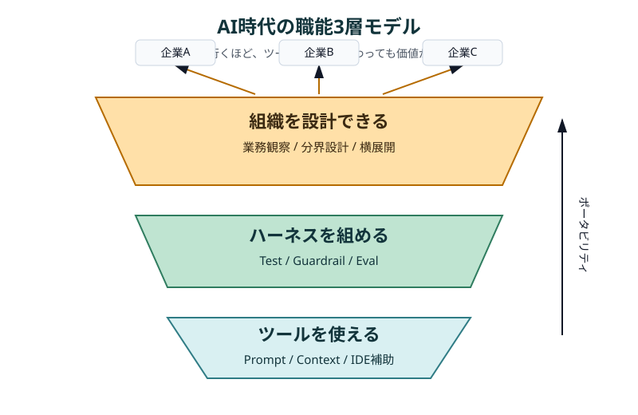
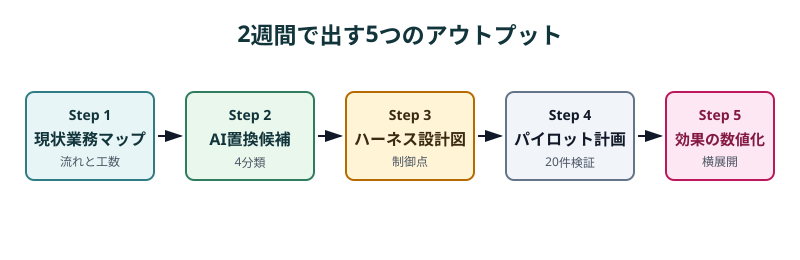
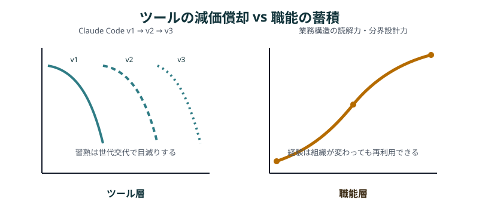

AIが使える人はもう余っている——次に必要なのは「AIが働ける職場」を設計できる人¶
対象 / ポイント
対象: AIコーディングツールを使い始めたエンジニア、テックリード。「ツールは覚えた。次にどこを伸ばすべきか」を考えている人。
ポイント: - 「AIが使える」は2026年時点でコモディティ。プロンプトが書けるだけでは差別化にならない - 価値があるのは、どの企業の文化・制約の中でもAI活用の全体設計ができるポータブルな職能 - 新しい部署に2週間で「現状業務マップ → AI置換候補 → ハーネス設計図 → パイロット計画」を出せることが到達基準
この記事の問いは、AI時代に技術者がどのレイヤーの職能を積めば、ツールの流行に飲まれず価値を残せるのか、である。
「AIが使える人」は余り始めている¶
「Claude CodeもCopilotも使えます」がレジュメに並ぶ時代は、すでに来ている。Stack Overflowの2025年調査では、回答者の84%が開発プロセスでAIツールを使っている、または使う予定だと答えた1。
プロ開発者の51%は毎日使っている。
ここで言う「余っている」は、採用市場全体の人材不足を否定する言葉ではない。AIコーディング文脈で、基本操作だけを差別化要因にしている層の話だ。
求人票に「生成AI活用経験」「Copilot利用経験」「AIエージェントへの指示経験」と書かれる。応募者の多くも、チャットで仕様を詰め、IDEで補完を受け、Claude Codeにテストを書かせた経験を持っている。
では何が違うのか。
差がつくのは、AIに作業を振れる人ではなく、AIが何度働いても壊れにくい業務環境を設計できる人だ。企業導入では、操作スキルよりも、権限、監査、承認、評価の設計が詰まりやすい。市場価値は、その入口の奥へ移っている。
3層モデル：使える→組める→設計できる¶
AI時代の職能は、「使える」「組める」「設計できる」の3層で見ると整理しやすい。

第1層は、ツールを使える人だ。プロンプトを書き、コンテキストを渡し、CopilotやClaude CodeやCodexに小さな実装を任せられる。
GitHub Copilotのクラウドエージェントも、リポジトリの知識、ツール、コーディング標準を与えるほど有効になると説明されている2。
この層の限界は、習熟の寿命が短いことにある。Claude Codeは、複数ファイルの実装、Git操作、MCP、Skills、Hooks、複数エージェントなどを次々に取り込んでいる3。
今日の操作手順は、次のバージョンで標準機能に吸収される。
第2層は、ハーネスを組める人だ。ハーネスエンジニアリングとは、AIの出力をテスト、ガードレール、承認フロー、評価指標で囲み、繰り返し実行できる生産系にする考え方である。
たとえば「入力 → 前処理 → Skills → Tools → Guardrail → Checkpoint → 出力 → Eval」という流れを設計する。
この層には明確な差が出る。AIに100回レビューを走らせても、毎回同じ観点で止まり、同じ基準で合否が出るなら、チームの生産性は一段上がる。
ただし、第2層は既に定まった業務境界の中で、AIを安全に動かす制御系を作る職能である。強いが、まだ技術者の職能に閉じている。
第3層は、AIが働ける組織を設計できる人だ。企業文化、承認フロー、既存システム、セキュリティ境界、人間関係という技術以外の変数を読み取り、その中でAIの最適配置を決める。ここから職能はポータブルになる。
第3層は、業務境界そのものを観察し、どこをAIに任せ、どこを人に残すかを再設計する職能だ。制御系を作る前に、制御すべき業務の切り方を決める。
同じ「問い合わせ分類」でも、出すものは違う。第2層の人は、分類プロンプト、テストデータ、誤分類時の停止条件、レビュー画面を作る。第3層の人は、そもそもどの問い合わせをAIに渡し、どれを人に残し、どの部署の承認を通すかを決める。
業務を観察する → 流れを図にする → AI化可能な工程を見極める → ガードレールを設計する → 小さく回す → 数字で効果を示す → 横展開する。
頭の中でこの動画が再生できる人は、ツール利用者ではなく生産システムの設計者だ。
| 層 | できること | 市場価値 |
|---|---|---|
| 第1層: ツールを使える | プロンプトを書き、コンテキストを渡し、AIツールを業務に使える | コモディティ化が速い |
| 第2層: ハーネスを組める | 既存業務の中で、テスト、ガードレール、承認フロー、評価指標を設計できる | 技術者として差がつく |
| 第3層: 組織を設計できる | 業務境界を再設計し、企業ごとの制約に合わせて横展開できる | 本質的なポータブル職能 |
第1層は入口、第2層は実行基盤、第3層は事業への接続である。キャリアの天井を上げるなら、上の層へ進む必要がある。
新しい部署に入って2週間で何を出すか¶
第3層の人は、着任直後に「大きな構想」ではなく、試せる初期成果物を出す。

第3層の到達基準は、新しい部署に入って2週間で、AI活用の設計図を出せることだ。大きな改革案ではない。現場が「これなら試せる」と言える、薄くて具体的な5つの成果物で十分だ。
2週間で出すのは、完成形ではない。アクセス権、SMEの協力、業務ログ、既存KPIの有無を確認したうえで、初期診断とパイロット設計までを出す。
現状業務マップ
誰が、何を見て、どのツールで、何分かけているかを並べる。会議体や承認者も含める。
例: 「営業企画担当がSalesforceとスプレッドシートを見比べ、週次レポートの転記に45分使う」。AI置換候補一覧
業務を4つに分ける。そのままAI化、AI補助、人が残す、今は触らない、である。
例: 「一次要約はAI化、顧客への最終文面は人が残す、法務確認が絡む判断は今は触らない」。ハーネス設計図
AIを安全に走らせる配線図だ。入力、前処理、Skills、Tools、Guardrail、Checkpoint、出力、Evalを1枚に置く。
例: 「契約書要約は、機密除去を通し、禁止語チェックをかけ、熟練者が20件だけ採点する」。パイロット計画
1業務、1人の熟練者、20件で始める。最初から全員展開しない。
例: 「問い合わせ分類だけを対象に、ベテラン1名が過去20件の正解ラベルと照合する」。効果の数値化と横展開提案
時間短縮率、手戻り率、誤判定率で語る。感想では通らない。
例: 「平均処理時間を18分から9分に下げ、誤分類率が5%以内なら隣チームへ展開する」。
この5点が出ると、議論の重心が変わる。「AIを入れるべきか」から、「どの条件なら安全に試せるか」へ移る。大企業では、この移動が特に重要だ。
なぜ「ポータブル」であることが重要か¶
ツールは変わる。昨年のCopilotと今年のCopilotは別物であり、Claude Codeも端末、IDE、Web、Slack、GitHub Actionsへ広がっている4。その変化に追随するだけでは、常に学び直しの競争になる。
一方で、業務を観察し、AIと人の分界を切り、小さく回して効果を示すプロセスは残る。転職しても、異動しても、事業ドメインが変わっても使える。ツール習熟は減価償却資産、業務設計力は複利資産だ。

Conwayは、システム設計は組織のコミュニケーション構造の写しになると述べた5。AI導入でも同じだ。どの入力を受け取り、誰が承認し、どの失敗を止めるかを先に決めなければ、AIは部署ごとの局所最適に散らばる。
逆コンウェイは、望むアーキテクチャに合わせてチームや境界を設計する発想である6。ここでは名前より実務が重要だ。境界を切る力と仕様を書く力が、AIを組織に着地させる力になる。
ただし、大企業の現実は甘くない。理想はわかる。でも現場では誰もリスクを取りたがらない。情報システム部門は統制を守り、法務は例外を嫌い、事業部は数字が見えない試行に時間を割きたがらない。
だからこそ、小さく、安全に、数字で示すアプローチが刺さる。1業務、1人、20件なら、失敗しても被害は限定できる。成功すれば、次の承認会議で必要なのは熱意ではなく実測値になる。
まとめ——手段ではなく職能を積め¶
「Claude Codeの使い方」を学ぶな、という話ではない。第1層は必要だ。手を動かせない人に、第2層のハーネスも第3層の組織設計も作れない。
ただし、ツール操作は土台であって天井ではない。次に積むべきは、AIを制御する仕組みを作る力であり、その仕組みを現場の文化、制約、承認フローに合わせて着地させる力だ。
AIの進化が速いほど、キャリアの中心は「何を知っているか」から「何を壊さずに変えられるか」へ移る。償却されない資産は、業務構造を読み取る目と、組織の制約の中で最適解を出す判断力だけだ。